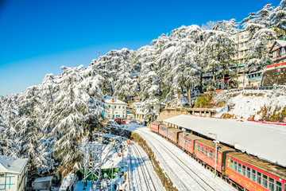
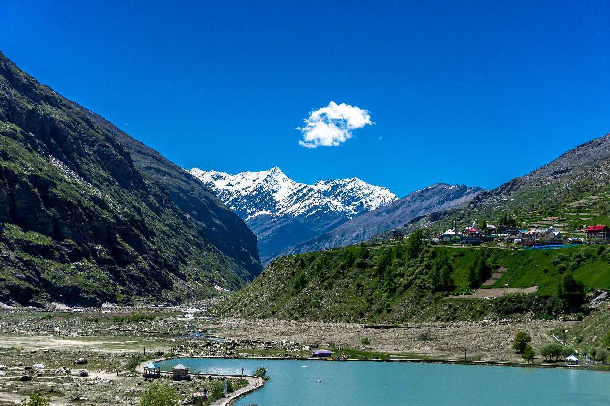
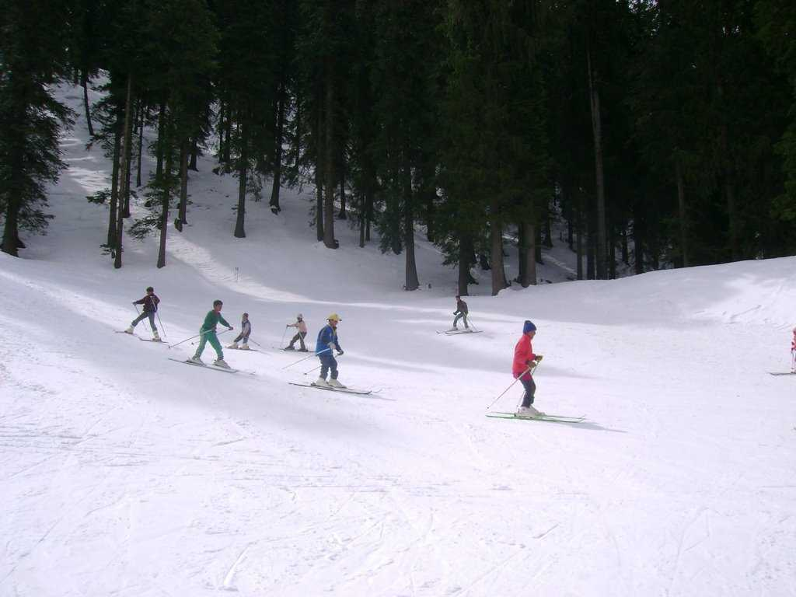
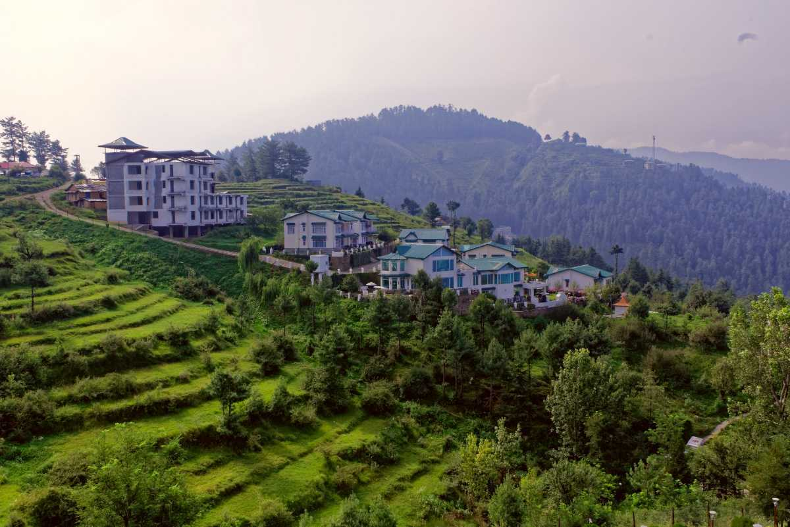

ith spectacular valleys, breathtaking views, snowcapped mountains, and lush forests of oak, deodar, and pine, Manali is a magical hill station at the northern end of Kullu valley in Himachal Pradesh. Gifted to the world by the mighty Himalayas, it is known to be one of the most popular destinations for Honeymooners.

Shimla is the capital of Himachal Pradesh and a popular hill-station among Indian families and honeymooners. Situated at the height of 2200m, it was the summer capital of British India.
Chail is a quiet hill station close (44km) to Shimla, known for the world's highest cricket ground and a heritage hotel, Chail Palace. Surrounded by pine and deodar trees, Chail is located at an altitude of 2,250m above sea level.
Isolated from the rest of the world lies a solitary village in Malana Nala, which is a side valley of the Parvati Valley. Known as Malana or the Malana Village, it is located in the Kullu district. Widely known for its strong culture and religious beliefs, with various sentiments embedded in the past, it is a place meant for people who seek spiritual guidance.

Jispa is a village on the banks of the Bhaga River in the Lahaul and Spiti District, and is located at a distance of 20 km from Keylong and about 92.3 km from Manali. Even though Jispa is often considered as a pitstop on the Manali - Leh route, the scenic beauty of the place, surrounded by snow-capped Himalayan mountains, glacial lakes and Buddhist stupas makes Jispa an ideal place for camping and trekking.
Over the years, the region eventually became a seasonal marshy salt desert. During monsoons, the marsh fills up with water and the wetland extends from the Gulf of Kutch on the west through to the Gulf of Cambay on the east.
Packed with a thick green cover of pine and deodar trees, the town of Mandi is situated at the junction of Kullu and Dharamshala. It is often referred to as 'Varanasi of Hills', or 'Choti Kashi' as the town has as many as 81 temples spread across its area.

Surrounded by tropical forests, majestic hills and woodlands, Narkanda is a quaint little town 63 kms away from Shimla district which is popular for skiing in winters.

Mashobra is a lush green expanse in Himachal Pradesh, tucked away at a height of about 7700 feet, ensuring minimal human obstruction in the course of nature to provide you with the most pure and liberating experience of your lifetime.
Solang Valley, located about 14 kilometers from Manali in Himachal Pradesh, is renowned for its breathtaking landscapes and adventure sports. This picturesque valley is a popular destination for skiing in winter and paragliding, zorbing, and trekking during the summer months.

he Sar Pass Trek is a popular trekking route in the Parvati Valley of Himachal Pradesh, offering stunning views of snow-covered peaks and lush forests.
Kinnaur Kailash is a revered mountain peak standing at an altitude of 6,500 meters (21,325 feet). It is considered sacred by both Hindus and Buddhists, as it is believed to be the winter abode of Lord Shiva.